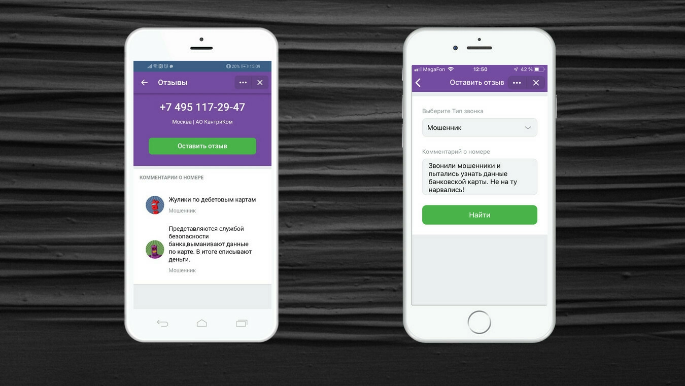

"Вконтакте" всё развивается и развивается
«ВКонтакте» запускает определитель телефонных номеров на основе интеллектуальных алгоритмов и Big Data. Об этом сообщает пресс-служба соцсети.
Отмечается, что приложение «ВКонтакте» сможет предупреждать о нежелательных звонках. Так соцсеть будет ограждать пользователей от спама, попыток мошенничества и других сомнительных вызовов. Сервис не требует доступа к интернету, работает в фоновом режиме и доступен бесплатно на iOS и Android.
Спамом помечаются вызовы от мошенников и коллекторов, а также «немые» звонки. Включить функцию можно в разделе приложения «Определитель номера»: на экране появится инструкция, как её активировать на вашем устройстве.
Для улучшения базы и работы приложения сервис предложит поделиться обратной связью, если номера ещё нет в базе, но алгоритм заметит необычную продолжительность или частоту вызова.
Ранее сообщалось, что «ВКонтакте» запускает программу поддержки набирающих популярность видов спорта.